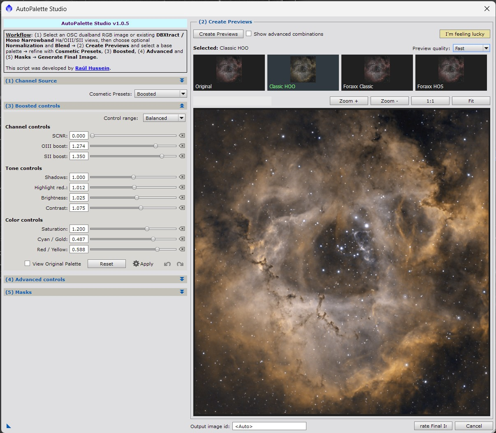

Visual narrowband palette studio for OSC dual-band and monochrome Ha/OIII/SII images. [more]
Keywords: autopalette, narrowband, foraxx, HOO, SHO, OSC, dualband, PIP, palette, PixInsight, DBXtract
[hide]
[hide]

AutoPalette Studio is a visual palette exploration script for PixInsight. It helps create, compare and refine narrowband colour palettes from OSC dual-band RGB images or from existing monochrome Ha, OIII and optional SII channels, including channels generated by DBXtract.
The script has been designed as a Studio-style workflow: first select the source data, then create a grid of candidate palettes, choose the most promising look, refine it with cosmetic presets, boosted controls, advanced layers and mask protection, and finally generate only the selected palette as a full-resolution RGB image.
Recommended image state
AutoPalette Studio is primarily intended for non-linear / stretched images. It can detect linear input data and use internally stretched temporary working copies for preview and final generation, but the most predictable creative results are obtained after calibration, registration, integration, background correction and an initial stretch have already been performed.
The PIP approach
AutoPalette Studio builds on the PIP (Power Inverted Pixels) approach used in previous AutoPalette experiments for dynamic narrowband palette combinations. PIP helper maps such as H, O, S, HO, HS and OS are derived from the emission channels and are used to build Foraxx-style colour relationships without relying only on direct RGB assignment.
In practice, PIP transformations are useful because they can enhance local colour separation, reveal subtle interactions between Ha, OIII and SII, and produce richer transitions in creative Foraxx-inspired palettes. AutoPalette Studio wraps these transformations into an interactive interface, so the user can explore the result visually before committing to a final image.
Main benefits
- Explore narrowband palettes visually before creating the final image. - Generate HOO, SHO and Foraxx-inspired looks without writing PixelMath expressions manually. - Work with OSC dual-band images or separated monochrome Ha/OIII/SII channels. - Use preview quality modes to balance speed and fidelity during experimentation. - Refine the selected palette with Boosted controls, Cosmetic Presets and Advanced layers. - Protect stars or selected colour structures with mask-assisted refinement. - Generate the final selected image at full resolution, keeping the preview/final workflow aligned.
[hide]
Selects the type of source data used by the script.
OSC Dualband is used with a colour RGB image obtained from an OSC camera and a dual-band or multi-band narrowband filter. The script extracts internal Ha, OIII and synthetic SII working channels as required by the selected palette workflow.
DBXtract / Mono Narrowband is used with existing grayscale Ha, OIII and optional SII views. This mode is appropriate for monochrome narrowband data and also for channels previously extracted with DBXtract. When this mode is selected, AutoPalette Studio attempts to auto-detect views whose identifiers contain common Ha, OIII or SII names.
Selects the OSC dual-band RGB image used as the source in OSC mode. Internal AutoPalette Studio preview and temporary views are hidden from the list to avoid accidental selection.
For best results, use a calibrated, integrated, background-corrected and stretched image. Linear images can be used, but the script will rely on an internal display stretch to make the preview and final result visually usable.
Selects the grayscale Hydrogen-alpha channel used in DBXtract / Mono Narrowband mode. The view can be a native monochrome narrowband master or an extracted Ha channel generated by DBXtract.
Selects the grayscale Oxygen III channel used in DBXtract / Mono Narrowband mode. This channel is required for HOO, SHO and Foraxx-inspired workflows.
Selects the grayscale Sulfur II channel used in DBXtract / Mono Narrowband mode. If SII is not available, AutoPalette Studio can still generate Ha/OIII workflows and can use an internal synthetic SII approximation for selected creative previews.
Selects whether the script applies a LinearFit-style normalization among the source channels before generating previews and final images.
None keeps the channels as provided. This is the fastest option and is recommended when the input channels are already well balanced.
Ha as reference, SII as reference and OIII as reference apply normalization using the selected channel as the reference.
Auto estimates a stable reference from Ha/SII/OIII statistics, with a preference for Ha when scores are close. Auto mode is useful when the channels come from different exposures, filters or extraction methods.
Controls the synthetic green blend used by classic palettes when a real SII channel is not available or when the selected workflow requires an Ha/OIII blend. This parameter is mainly relevant for classic HOO-style combinations.
Available blend modes include neutral, soft and hard Ha/OIII mixes. Soft blends are usually a good starting point for balanced HOO renderings.
Creates the visible palette candidates using the current source views, normalization mode, blend settings and preview quality. After pressing this button, the preview grid becomes active and the user can select a base palette visually.
When the setup changes, the existing preview state is reset. Create Previews must be pressed again before using Boosted, Cosmetic Presets, Advanced controls, Masks or Generate Final Image.
Selects the working size used for preview generation.
Fast is recommended while exploring palettes and tuning controls. Balanced and Quality provide more faithful previews at a higher processing cost. Final images are always generated at full resolution regardless of the selected preview quality.
The preview grid shows the main available palette candidates. The default workflow focuses on a compact set of useful previews, including Original, Classic HOO, Foraxx Classic and Foraxx HOS.
Clicking a preview tile loads it into the large preview area. The selected tile becomes the base for Cosmetic Presets, Boosted controls, Advanced layers, Masks and final generation.
Enables less common classic and Foraxx family previews. Keep this disabled for a cleaner and faster palette-picking workflow. Enable it when you want to explore additional Foraxx variants such as SHO, OHS, HOO, HSO, OSH or SOH.
Displays the currently selected palette at a larger size. The large preview can be panned and zoomed, and it is the visual reference used when adjusting Boosted controls, Advanced layers and Masks.
In linear-input workflows, AutoPalette Studio shows a status message indicating that internally stretched temporary copies are being used. The original views are not modified.
Provides quick starting points for common visual refinements. Presets adjust Boosted controls and may prepare Advanced settings, but they do not automatically stack an Advanced layer until the user presses Apply in the Advanced controls.
Available presets include Natural Boost, Blue Core, Warm Sulfur, Balanced Detail, Deep Contrast and Foraxx Pop. These presets are intended as creative starting points rather than fixed recipes.
Boosted controls provide real-time tonal and colour refinement of the selected preview. They are intended for global creative adjustments such as OIII boost, SII boost, shadow point, highlight control, brightness, contrast, saturation, cyan/gold balance and red/yellow balance.
The range mode can be set to Fine, Balanced or Aggressive. Fine is useful for subtle work, Balanced is a good default, and Aggressive gives more latitude for experimentation.
The Apply button stacks the current Boosted controls over the selected preview and makes the result the new base for that palette. Undo and Redo allow moving through applied Boosted layers.
Advanced controls are layer-based refinements that can be prepared and then explicitly applied. This section includes Gold Accent and Structure Lift controls.
Gold Accent emphasizes warm/gold structures, typically related to SII or sulfur-like colour regions in Foraxx-style palettes.
Structure Lift increases the contribution of structure from a selected source channel. SII, OIII and Ha are supported. This is useful for emphasizing nebular detail without changing the whole palette globally.
Advanced layers have their own Apply, Undo and Redo workflow. Moving the controls prepares the next layer; pressing Apply commits it to the preview stack.
Selects a preconfigured mask used to constrain Boosted and Advanced refinements.
Star Protection protects stars and halos from Boosted or Advanced changes.
Blue Core applies refinements mainly to OIII/cyan-blue regions.
Warm/Gold applies refinements mainly to warm Ha/SII/gold structures.
Faint Red applies refinements mainly to weaker red Ha/SII regions while avoiding the brightest warm structures.
Controls the strength of the selected protection mask. Higher values protect more of the masked structures from Boosted and Advanced changes. Lower values allow the refinement to affect more of the image.
Show Mask Preview displays the currently selected mask over the large preview so the user can evaluate which structures will be protected or affected.
Invert mask reverses the mask behaviour. This is useful when the user wants to apply changes to structures that would otherwise be protected.
Export Mask creates a visible grayscale PixInsight view from the currently selected mask. If Invert mask is enabled, the exported mask is inverted too.
Randomly selects one of the available previews and applies a tasteful random Boosted/Advanced preparation. Advanced effects are prepared but not stacked until the user presses Apply.
This button is useful for quickly exploring creative directions when the user wants inspiration or a fast alternative starting point.
Defines the identifier of the final generated PixInsight view. Leave this field empty or use Auto to let the script derive the name from the selected palette. Invalid identifier characters are replaced by underscores.
Generates the currently selected palette at full resolution. The final image uses the selected base palette and the visible Boosted/Advanced/Mask state.
Final generation is independent of preview quality: even if previews were generated in Fast mode, the final output is created from the full-resolution source data.
[hide]
Basic workflow
1. Open the source OSC image or the separated Ha/OIII/SII channels in PixInsight.
2. Select OSC Dualband or DBXtract / Mono Narrowband according to the available data.
3. Select the required source view or views.
4. Choose the Normalization mode. Use None for already balanced channels, or Auto when the channels come from different sources or have noticeably different intensities.
5. Press Create Previews.
6. Click a preview tile to load it into the large preview.
7. Optionally apply a Cosmetic Preset, adjust Boosted controls, add Advanced layers and enable mask protection.
8. Define an Output image id if desired.
9. Press Generate Final Image to create the selected palette at full resolution.
Recommended workflow for OSC dual-band images
Calibrate, register, integrate and background-correct the OSC data before using AutoPalette Studio. Stretch the image to a non-linear state for the most predictable creative result. Select the stretched RGB image as the OSC RGB view, then create previews and choose the most suitable palette.
OSC data often benefits from HOO and Foraxx-inspired palettes where OIII/cyan structures and warm Ha/SII-like structures can be separated visually. Use Boosted controls carefully to avoid oversaturating stars or clipping faint nebulosity.
Recommended workflow for DBXtract or monochrome narrowband channels
Open the Ha, OIII and optional SII grayscale views. Select DBXtract / Mono Narrowband mode. If the view identifiers contain common names such as HA, OIII, O3, SII or S2, AutoPalette Studio will try to detect them automatically.
When a real SII channel is available, SHO and Foraxx-style combinations have more physically meaningful colour separation. When SII is missing, HOO and selected synthetic-SII workflows can still provide useful creative renderings.
Working with linear data
AutoPalette Studio can detect linear input and use internally stretched temporary copies for previews and final output. This behaviour is intended to make the visual workflow usable without modifying the original views. However, for creative palette design, stretched/non-linear images are recommended because the colour and tonal controls respond more predictably.
Working with PIP / Foraxx-style palettes
PIP-based Foraxx workflows use relationships between emission channels instead of only direct RGB assignments. The result can be more dynamic and can reveal subtle colour transitions between Ha, OIII and SII structures. Start with Foraxx Classic or Foraxx HOS, then use Boosted controls and Gold Accent/Structure Lift to refine the image.
Buttons
Create Previews: builds the preview grid from the selected source data.
I'm feeling lucky: chooses a preview and prepares a creative random refinement.
Apply: commits the current Boosted or Advanced adjustment to the preview stack.
Undo / Redo: moves backward or forward through the applied Boosted or Advanced layers.
Reset: returns the relevant control group to a neutral state.
Export Mask: creates a visible grayscale mask view from the selected mask preset.
Generate Final Image: creates the selected palette as a full-resolution RGB image.
Notes and limitations
AutoPalette Studio is a creative palette exploration tool. It does not replace calibration, integration, background extraction, noise reduction, deconvolution or general image processing. The quality of the result depends strongly on the signal-to-noise ratio, stretch, colour balance, available emission lines and the quality of the input data.
Copyright © 2026 Raul Hussein